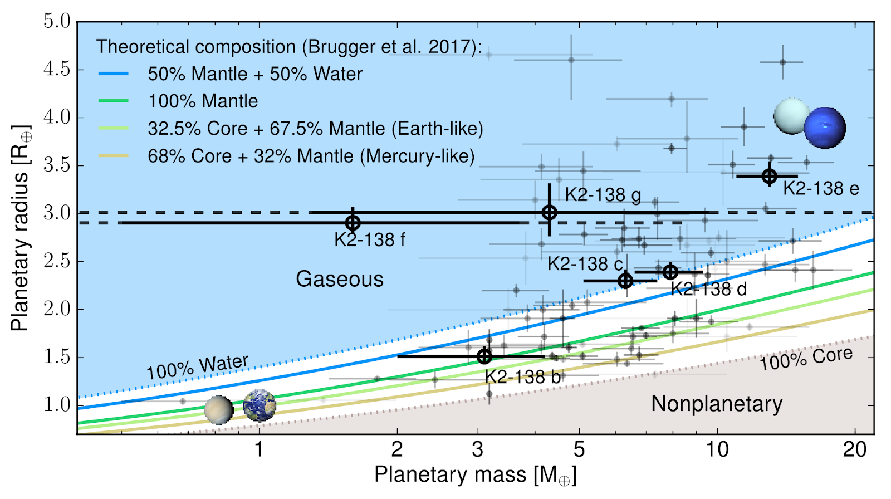

I’m a PhD student in the Center for Cosmology and Particle Physics at New York University. I study the large-scale structure of the universe—how we can use observations of galaxies and other objects to understand fundamental cosmological properties. More broadly, I’m interested in the application of data science and statistics to astrophysical problems. I also write about science and engage in science outreach.
I’m a PhD student in the Center for Cosmology and Particle Physics at New York University. I study the large-scale structure of the universe—how we can use observations of galaxies and other objects to understand fundamental cosmological properties. More broadly, I’m interested in the application of data science and statistics to astrophysical problems. I also write about science and engage in science outreach.
Research

Anomaly Detection with Deep Learning
I am using Generative Adversarial Networks (GANs) to detect anomalous images in the Hyper-Suprime Cam survey. Weird galaxies, active AGN, new gravitional lenses, alien technosignatures - what will we find?!

Emulation of Galaxy Clustering
I am a part of the Aemulus collaboration, building emulators to predict galaxy clustering statistics for any desired parameter set. My current project: emulate the void probability function!

Better Correlation Function Estimation
I am building a new, improved estimator for the two-point correlation function for large-scale structure. It measures galaxy clustering in a coontinuous basis - no need for binning!
Teaching
Courses
- Fall 2019: Quarks to Cosmos (Lab Instructor)
- Fall 2018: Physics 1, NYU (Recitation Teaching Assistant)
- Fall 2015: Introduction to Object-Oriented Programming and Computer Science, Brown University (Undergraduate Teaching Assistant)
Pedagogy
- Spring 2019: Design Team Leader, Institute for Scientist & Engineer Educator’s Professional Development Program (ISEE PDP). Led a team to design and teach a workshop on galaxy spectroscopy at CCA.
- Spring 2018: Participant, ISEE PDP. Designed and taught a workshop on Bayes Theorem at CCA.
Writing
I write for Astrobites, a site by graduate students that summarizes new astrophysics research papers and dishes out other astro-focused content. Some of my recent posts:
-  Twinkle, Twinkle
- Twinkle, Twinkle
I’ve also published in the Cooper Square Review, a book review of “Hello World” by Hannah Fry.
Updates
- January 2019: I gave a talk and a workshop at AAS235 in Honolulu, Hawai’i..
- December 2019: I was elected co-chair of our new grad student org at NYU, G-PHORCE (Graduate Physics Organization for Research, Culture, and Education).
- October 2019: I attended the dotAstronomy conference in Toronto!
- September 2019: I presented at GothamFest, New York’s annual festival of astronomy talks.
- July-August 2019: I was a Kavli Student Fellow at the Kavli Summer Program in Astrophysics at UC Santa Cruz, on Machine Learning in the Era of Large Astronomical Surveys.
- May 2019: I attended the Emulation of Galaxy Clustering workshop at the CCAPP at Ohio State University.
- March-April 2019: I led a teaching team at the Professional Development Program’s Inquiry institute in Monterey, CA, and the Design Institute in Boulder, CO.
- December 2019: I completed the Advanced Science Communication Workshop at NYU’s Carter Journalism Institute.
- July 2018: I attended the Summer School on Large Scale Structure in Berlin.
- March-April 2018: I attended the PDP Inquiry institute in Monterey, CA, and the Design Institute in Houston, TX.
- December 2018: I completed the Science Communication Workshop at NYU’s Carter Journalism Institute.
Service
- I am the co-chair and one of the founding members of the new graduate student organization at NYU, G-PHORCE (Graduate Physics Organization for Research, Culture, and Education).
- I co-organize the astro-ph journal club in the Center for Cosmology and Particle Physics (CCPP) at NYU. The papers we discuss can be seen on Benty-Fields.
- I am on the board of the Women in Physics (WiPhy) group at NYU.